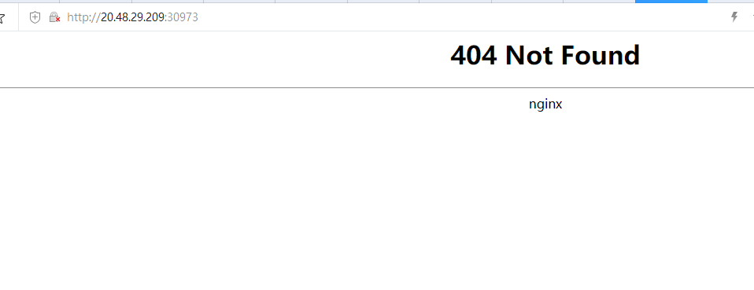
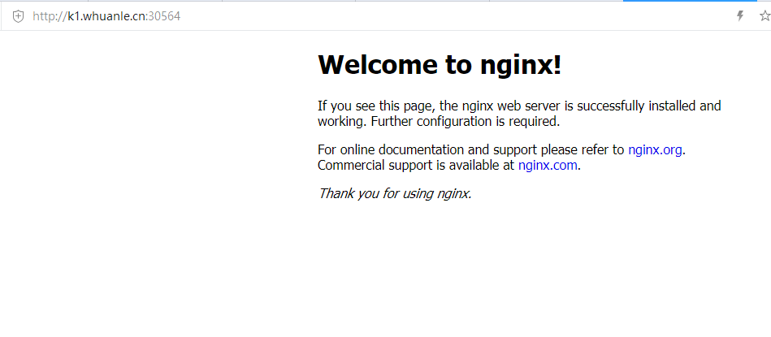
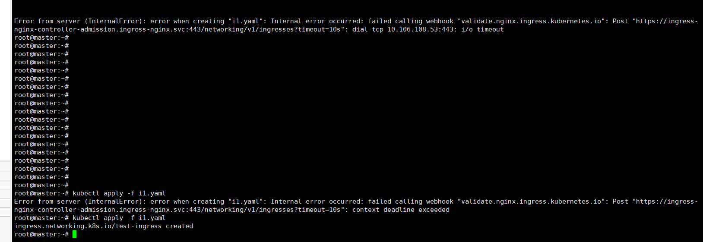
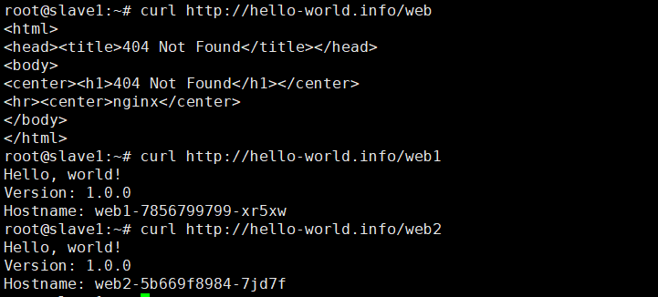
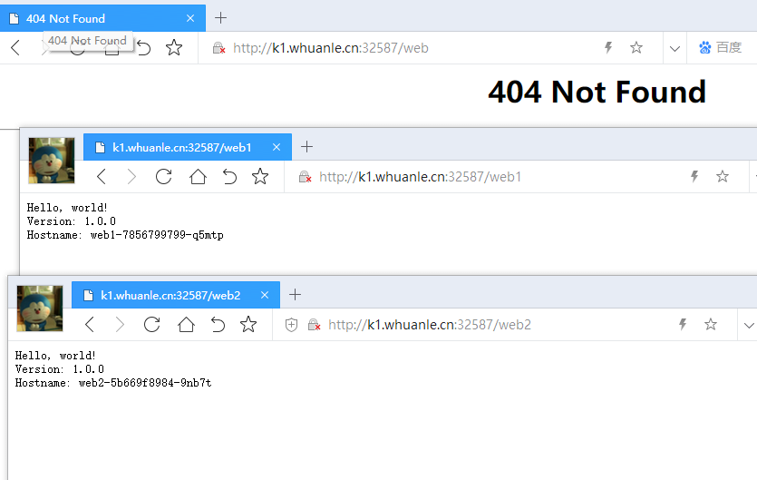
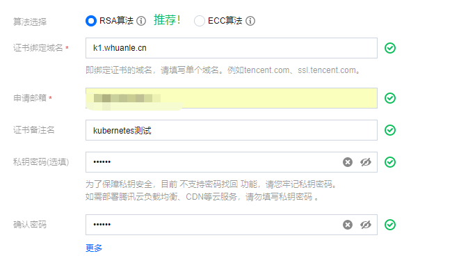
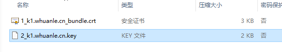
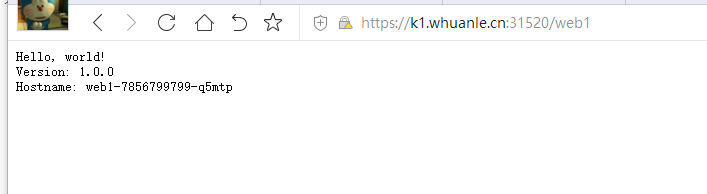

4.3 ingress
在 4.1 章中，介绍了 Kubernetes 网络以及 Service ，当我们的服务在多台服务器上时，我们需要提供一个统一的访问点，用户只需要访问这个地址即可，而不需要所有服务器的 IP 地址。使用 LoadBalancer 是个好办法，例如腾讯云的 CLB，可以创建一个 IP，当用户访问这个 IP 时，可以动态将用户请求头部的 IP 地址替换成需要访问的节点服务器地址。
这部分跟 TCP 的 IP 头部有关，TCP 是传输层的对象，例如当 TCP IP 为 111.111.111.111 时，用户的 TCP 数据报到底下一个路由时，这个路由可以修改 TCP 中的 IP 部分，改成 222.222.222.1，这样此 TCP 数据报便会寻找 IP 为 222.222.222.1 的服务器。
负载均衡器


负载均衡器有两类，区别在于四层网络和七层网络的支持，传输层在第四层，这层协议有 TCP/UDP/TCP SSL 等，而七层有 HTTP/HTTPS。
一般来说，像腾讯云等云服务商，人家有很多机房，提供 DNS，NAT 这些服务很正常，但是欸，我就是不用，我就要自己做，那你可以用 Kubernetes 中的 Ingress 来做。
什么是 Ingress
我们做网站时，使用 Nginx 做 Web 服务器，会使用一个子域名绑定一个网站，a.xxx.com 绑定 A 网站，b.xxx.com 绑定 B 网站，这样在一个域名的不同子域名可以访问不同的站点，对于现在的大多数互联网网站，依然会使用这种方法划分。
在微服务架构中，多个模块部署在不同的服务器上，则但是我们希望都通过 xxx.com 这个域名直接访问，就好像所有模块都在一起，让用户感觉只有一个网站。则可能会使用目录路径对模块进行划分，例如如果我们要实现 xxx.com/a 访问 A 模块，xxx.com/b 访问 B 模块，但对用户来说，一直在访问 xxx.com 这个域名。
这种需求，我们可以使用 nginx 进行反向代理，而在 Kubernetes 中，这种需求也是一模一样的。
首先，我们可以为 A、B、C 等应用，创建多个 Service，每个 Service 访问一个应用，然后使用 Ingress 配置路由规则，决定 URL 可以访问哪个 Service。

Ingress 公开了从集群外部到集群内服务的 HTTP 和 HTTPS 路由，Ingress 资源上定义的规则控制了路由。
Ingress 可以让集群中的多个 Service 能够从集群外访问，Ingress 还提供负载均衡、SSL/TLS 和基于名称的虚拟服务器等，Ingress 可以配置边缘路由器或其他前端工具来帮助处理网络流量，但是一般都是通自己的负载均衡器来实现。
Ingress 有两部分，一部分是 LoadBalancer ，提供统一入口，代理请求；另一部分是 Ingress 控制器，复制定义路由规则等。
如果不使用公有云平台的 LoadBalancer ，那么就自己搭建一个服务器，这台服务器加入到 Kubernetes 集群中，做流量入口，这台服务器网络接口必须够大，抗得住流量。
Ingress 与 Service
在前面，我们已经学习到了 Service，通过 Service 我们可以暴露一个端口到外网中，通过这个端口可以访问应用。
其中，有两种方法可以暴露 Service，可以让其被集群外部访问：
- 使用
Service.Type=LoadBalancer - 使用
Service.Type=NodePort
Service 的访问方式是 IP，每次要将服务公开给外界时，都必须创建一个新的 LoadBalancer 并向云服务商获取一个公网 IP 地址。或者使用 NodePort，但是只能在一台服务器上被访问，而且 Service 只能为一种 Pod 服务，暴露一个或多个端口，那么 N 个服务，就需要创建 N 个 Service。Service 虽然能够公开端口到外部网络中，但是无法将这些服务合并到一个 example.com/{服务} 中访问，Service 需要通过不同的端口访问。
如果你有一个 example.com 域名，你部署了多个 Web 服务，其中有两个子模块分别为课程(course)、考试(exam) 两个微服务，这些模块构成了一个培训网站。此时我们希望访问 example.com/api/course 能够访问课程学习模块，访问 example.com/api/exam 能够访问考试模块。显然，Service 是无法做到的。
使用 Ingress ，可以轻松设置路由规则，而且无需创建一堆 LoadBalancers/Nodes 公开每个服务，并且 Ingress 本身具有很多功能。
Ingress 也需要 Service 。
安装 Ingress 控制器
Ingress 控制器有多种实现，其中 Kubernetes 官方有一个名为 Ingress-nginx 的实现，其它实现还有 Kong Ingress、Traefik、HAProxy Ingress 等，在本章中，我们安装使用 Apisix Ingress 或 Nginx Ingress，但是只使用 Nginx Ingress 做演示，其它控制器请参考官方文档： https://kubernetes.github.io/ingress-nginx/deploy/#provider-specific-steps
Apisix Ingress
Helm 是一个 Kubernetes 上的打包工具，如果服务器中已经有 Helm，那么我们通过 Helm 工具安装 Apisix：
sudo snap install helm --classic
helm repo add apisix https://charts.apiseven.com
helm repo update
kubectl create ns ingress-apisix
helm install apisix apisix/apisix \
--set gateway.type=NodePort \
--set ingress-controller.enabled=true \
--namespace ingress-apisix
kubectl get service --namespace ingress-apisix
安装 dashboard：
helm install apisix-dashboard apisix/apisix-dashboard --namespace ingress-apisix
然后会提示你执行一些命令，将命令复制到部署了 dashboard 的节点运行。
安装 Apisix Ingress 控制器：
helm install apisix-ingress-controller apisix/apisix-ingress-controller --namespace ingress-apisix
查看这些组件的 Service：
root@master:~# kubectl get services --namespace=ingress-apisix
NAME TYPE CLUSTER-IP EXTERNAL-IP PORT(S) AGE
apisix-admin ClusterIP 10.96.38.188 <none> 9180/TCP 105s
apisix-dashboard ClusterIP 10.111.179.134 <none> 80/TCP 37s
apisix-etcd ClusterIP 10.98.124.145 <none> 2379/TCP,2380/TCP 105s
apisix-etcd-headless ClusterIP None <none> 2379/TCP,2380/TCP 105s
apisix-gateway NodePort 10.100.83.155 <none> 80:30712/TCP 105s
apisix-ingress-controller ClusterIP 10.108.233.236 <none> 80/TCP 20s
修改 apisix-dashboard 的 Service 类型为 NodePort。
kubectl edit service apisix-dashboard --namespace ingress-apisix
root@master:~# kubectl get services --namespace=ingress-apisix
NAME TYPE CLUSTER-IP EXTERNAL-IP PORT(S) AGE
apisix-admin ClusterIP 10.96.38.188 <none> 9180/TCP 2m31s
apisix-dashboard NodePort 10.111.179.134 <none> 80:31429/TCP 83s
apisix-etcd ClusterIP 10.98.124.145 <none> 2379/TCP,2380/TCP 2m31s
apisix-etcd-headless ClusterIP None <none> 2379/TCP,2380/TCP 2m31s
apisix-gateway NodePort 10.100.83.155 <none> 80:30712/TCP 2m31s
apisix-ingress-controller ClusterIP 10.108.233.236 <none> 80/TCP 66s
查看 apisix-dashboard 安装到了哪里：
root@master:~# kubectl get pods --namespace ingress-apisix -o wide
NAME READY STATUS RESTARTS AGE IP NODE NOMINATED
apisix-dashboard-66b4ddb8b8-zcgs4 0/1 CrashLoopBackOff 4 (66s ago) 3m15s 10.44.0.4 master <none>
由于其部署在 master 节点上，则可以使用 master 的公网 IP 访问它。
查找其映射到节点的端口：
root@master:~# kubectl get service --namespace ingress-apisix
NAME TYPE CLUSTER-IP EXTERNAL-IP PORT(S) AGE
apisix-dashboard NodePort 10.109.51.102 <none> 80:32026/TCP 5m25s
请自行参考配置 pvc，https://apisix.apache.org/zh/docs/ingress-controller/deployments/minikube
卸载方法：
helm uninstall apisix apisix-dashboard apisix-ingress-controller --namespace=ingress-apisix
[Info] 提示
由于 Apisix Ingress 配置复杂，笔者已经放弃尝试。
Nginx Ingress
通过 Helm 工具安装 ingress-nginx：
helm repo add ingress-nginx https://kubernetes.github.io/ingress-nginx
helm repo update
helm upgrade --install ingress-nginx ingress-nginx \
--repo https://kubernetes.github.io/ingress-nginx \
--namespace ingress-nginx --create-namespace
检测安装的版本：
POD_NAME=$(kubectl get pods -l app.kubernetes.io/name=ingress-nginx -o jsonpath='{.items[0].metadata.name}')
kubectl exec -it $POD_NAME -- /nginx-ingress-controller --version
接下来我们检查是否有成功安装 ingress-nginx 控制器，安装 ingress 控制器完成后，在 kube-system 命名空间会有相关的 Pod 出现。
kubectl get services --all-namespaces
default ingress-nginx-controller LoadBalancer 10.108.196.41 <pending> 80:30973/TCP,443:32341/TCP
default ingress-nginx-controller-admission ClusterIP 10.99.253.53 <none> 443/TCP
其中 ingress-nginx-controller 已被映射到节点的 30973 端口，所以可以通过公网 IP 访问。

创建和使用 Ingress
快速实践
这里我们快速创建一个简单的 Ingress 路由，练习一下。
创建 Pod：
kubectl create deployment nginx --image=nginx:latest --replicas=3
通过命令创建 Service：
kubectl expose deployment nginx --type=NodePort --port=8080 --target-port=80
创建 Ingress 服务：
apiVersion: networking.k8s.io/v1
kind: Ingress
metadata:
name: test-ingress
spec:
rules:
- host: k1.whuanle.cn
defaultBackend:
service:
name: nginx
port:
number: 8080
如果执行
kubectl apply -f时出现问题，请参考下一小节。k1.whuanle.cn 是笔者的域名。你也可以将域名解析到部署了 ingress 的服务器上。
获取 ingress：
root@instance-2:~# kubectl get ingress
NAME CLASS HOSTS ADDRESS PORTS AGE
test-ingress nginx k1.whuanle.cn 10.99.63.81 80 3m37s
ADDRESS 可能在1分钟后才会生成，如果其没有自动生成 ADDRESS，这里可能暂时不能访问，后面会提及如何解决这个问题。
因为 10.99.63.81 不是公网 IP，域名不能解析到此 IP 上。所以此时还是相当于访问 IP:端口，ingress 负载均衡器不起作用。
此地址同时是 ingress 控制器的地址。
按照 NodePort 可以使用域名访问后端服务。

解决小问题
如果应用 YAML 文件创建 Ingress 时，出现下面的提示，我们需要做些修改才能成功创建 ingress。或者多试几次。

Error from server (InternalError): error when creating "ingress.yaml": Internal error occurred: failed calling webhook "validate.nginx.ingress.kubernetes.io": Post "https://ingress-nginx-controller-admission.ingress-nginx.svc:443/networking/v1beta1/ingresses?timeout=10s": dial tcp 10.98.246.133:443: i/o timeout
使用下面的命令查看 webhook
kubectl get validatingwebhookconfigurations
NAME WEBHOOKS AGE
ingress-nginx-admission 1 4h5m
删除 ingress-nginx-admission ：
kubectl delete -A ValidatingWebhookConfiguration ingress-nginx-admission
接着重新创建 Ingress 即可。
接下来，我们将实际创建 Ingress，在本小节中，将使用 hello-world.info 域名，通过 /web1 访问一个网站，web2 访问另一个网站。
删除之前创建的对象：
kubectl delete deployment nginx
kubectl delete svc nginx
kubectl delete ingress test-ingress
实战 Ingress
部署 web
使用 Kubernetes 官方的容器创建一个 Hello world 的网站应用。
kubectl create deployment web1 --image=gcr.io/google-samples/hello-app:1.0 --replicas=3
kubectl create deployment web2 --image=gcr.io/google-samples/hello-app:1.0 --replicas=3
创建 Service，暴露端口:
apiVersion: v1
kind: Service
metadata:
labels:
app: web1
name: web1
spec:
ports:
- name: http
port: 8080
protocol: TCP
targetPort: 8080
selector:
app: web1
type: NodePort
---
apiVersion: v1
kind: Service
metadata:
labels:
app: web2
name: web2
spec:
ports:
- name: http
port: 9090
protocol: TCP
targetPort: 8080
selector:
app: web2
type: NodePort
或使用
kubectl expose deployment web1 --type=NodePort --port=8080 kubectl expose deployment web2 --type=NodePort --port=8080
查看 Service 信息：
NAME TYPE CLUSTER-IP EXTERNAL-IP PORT(S)
web1 NodePort 10.100.137.80 <none> 8080:31901/TCP
web2 NodePort 10.105.184.142 <none> 9090:31631/TCP
通过 ClusterIP 可以访问对于的 nginx 应用，其端口为 8080 或 9090。既然要创建 Ingress，我们就不需要关心 NodePort 端口了，只需要知道 8080、9090 即可。
创建 Ingress
这里我们为 Ingress 配置路由规则，访问 /web1、/web2 时，是在访问不同的应用，其中我们约定，要绑定的域名是 hello-world.info。
apiVersion: networking.k8s.io/v1
kind: Ingress
metadata:
name: test-ingress
spec:
ingressClassName: nginx
rules:
- host: hello-world.info
http:
paths:
- path: /web1
pathType: Prefix
backend:
service:
name: web1
port:
number: 8080
- path: /web2
pathType: Prefix
backend:
service:
name: web2
port:
number: 9090
当访问 http://hello-world.info/web1 时，会导向 Service Web1，接着由 Service 导向 Pod。
等十来秒钟，然后查看 ingress 列表：
root@master:~# kubectl get ingress
NAME CLASS HOSTS ADDRESS PORTS AGE
test-ingress nginx hello-world.info 10.99.63.81 80 3m37s
ADDRESS 中的是负载均衡器的地址，记下此地址，我们要将 hello-world.info 这个域名解析到 10.99.63.81 ，才能接着访问。
查看 Ingress：
kubectl describe ingress test-ingress
root@master:~# kubectl describe ingress test-ingress
Name: test-ingress
Namespace: default
Address: 10.99.63.81
Default backend: default-http-backend:80 (<error: endpoints "default-http-backend" not found>)
Rules:
Host Path Backends
---- ---- --------
k1.whuanle.cn
/ web1:8080 (10.32.0.12:80,10.32.0.13:80,10.32.0.16:80)
/web2 web2:9090 (10.32.0.11:80,10.32.0.14:80,10.32.0.15:80)
Annotations: <none>
Events:
Type Reason Age From Message
---- ------ ---- ---- -------
Normal Sync 6m53s (x2 over 7m26s) nginx-ingress-controller Scheduled for sync
Normal Sync 5m53s (x2 over 5m53s) nginx-ingress-controller Scheduled for sync
由于我们没有为 Ingress 提供可以访问的公网 IP ，因此没办法绑定域名，但是我们可以修改内网的 DNS，使得在内网可以通过域名访问。
打开 /etc/hosts 文件，添加一行：
10.99.63.81 hello-world.info
[Error] 提示
由于前面使用了 Deployment 部署服务，只有一部分节点部署到了 Pod，未被部署 Pod 的节点，不能通过此 IP 访问 Pod。因此这个配置只能在部署了 Pod 的节点上生效。
之后直接访问 curl http://hello-world.info/web1 、curl http://hello-world.info/web2 ，便可以访问到具体的 Pod 服务。

公网访问
由于没有公网负载均衡器，上面笔者的 Ingress 创建的 负载均衡器 IP 是集群内的，地址是 10.99.63.81，这个地址其实就是 Ingress 控制器的 Service IP。
root@master:~# kubectl get svc -n ingress-nginx
NAME TYPE CLUSTER-IP EXTERNAL-IP PORT(S) AGE
ingress-nginx-controller NodePort 10.99.63.81 <none> 80:32587/TCP,443:31520/TCP 23h
ingress-nginx-controller-admission ClusterIP 10.106.108.53 <none> 443/TCP 23h
如果在集群中访问，则只需要映射 10.99.63.81 然后访问 80 端口即可。
如果是公网访问，也有办法，因为此时 Service NodePort 是 32587，那么使用域名解析到节点 IP，在使用此端口访问即可。

Ingress 配置
在前面，我们使用一个 Ingress 关联了多个 Service，其简化 YAML 如下：
rules:
... ...
backend:
service:
name: web1
backend:
service:
name: web2
可以看到，这个 Ingress 关联了 Service，不过，Ingress 并不是通过 Service 转发流量。
我们通过 kubectl describe ingress 可以看到：
Rules:
Host Path Backends
---- ---- --------
hello-world.info
/web1 web1:8080 (192.168.56.1:80,192.168.56.2:80,192.168.56.63:80)
/web2 web2:9090 (192.168.56.3:80,192.168.56.4:80,192.168.56.5:80)
当用户访问 hello-world.info/web1 时，Ingress 并不会将用户请求转发给 Service web1，而是通过 Service web1 选择一个 Pod，这个 Pod 列表和 Pod 的 IP 列表，是 Endpoint 提供的。
当用户请求时 hello-world.info 时，会首先进行 DNS 查找，获取实际请求的 IP，然后请求会发送到 ingress-nginx 这个 Ingress 控制器，接着 Ingress 控制器根据请求的 HOST/URL 确定要访问哪个 Service，最后根据 Service 关联的 Endpoint 对象，查看 Pod 的 IP，最后，Ingress 控制器将请求转发给其中一个 Pod。
Ingress 结构
Ingress 由 Ingress Controller、Ingress API 两部分组成，为了让 Ingress 资源工作，集群必须有一个正在运行的 Ingress 控制器，在前面，我们使用了 ingress-nginx 控制器。 Ingress 控制器 负责满足 Ingress 中所设置的规则，即路由规则，例如 nginx，我们脱离 Kubernetes，单独部署使用 nginx 也可以完成这个需求。
由于 CKAD 认证中，只要求掌握 Ingress 控制器，而且很多书中都不会深入 ingress，所以这里笔者不再深入讲解，读者可以自行参考官方文档。
我们还可以使用其它 ingress 控制器，例如经常提及到的 Istio，详细可以参考官方完整名单：
https://kubernetes.io/zh/docs/concepts/services-networking/ingress-controllers/#其他控制器
https://kubernetes.github.io/ingress-nginx/user-guide/nginx-configuration/configmap/
Ingress 类型
在深入 Ingress 之前，我们来了解一下 Ingress 的类型/架构，这也称为调度方式，这可以帮助我们了解如何设计 Ingress。
默认后端
在 Ingress 中，当用户请求的 URL 没有任何区配的 Service 可用时，会返回 404，但是我们可以指定一个默认后端(Service)，当请求的 URL 不存在时对应路由规则时，此请求会被路由到默认的后端(Service)中。
spec:
defaultBackend:
resource:
apiGroup: k8s.example.com
kind: StorageBucket
name: static-assets
rules:
- http:
paths:
- path: /icons
pathType: ImplementationSpecific
backend:
... ...
单个 Service
这种 Ingress 只有一个 后端，即一个 Service ，Ingress 会将所有流量都发送到同一 Service 的简单 Ingress。
由于其只需要一个 Service，我们可以直接使用 DefaultBackend 指定一个 Service 即可，如 快速实践 一小节中的 Ingress 模板。
spec:
defaultBackend:
service:
name: nginx
port:
number: 8080
spec:
defaultBackend:
resource:
apiGroup: my666.com
kind: StorageBucket
name: static-assets

简单扇出
一个扇出配置(带rule)根据请求的 HTTP URL， 将来自同一 IP 地址的流量路由到多个 Service中，这种方式也称为 URL 映射，即我们在前面创建的多 Service 。

如果用户请求的 URL，没有
hosts或paths与 Ingress 对象中的 HTTP 请求匹配，则流量将路由到默认后端。
基于名称的虚拟托管
即域名模式，Ingrss 根据域名的不同，将请求转发到不同的 Pod 中，一般会使用不同的子域名访问不同的 Service。

TLS
Ingress 也支持 HTTPS，通过 SSL 证书为 HTTPS 提供安全保障。
当我们在云服务商的域名处，为域名分配 SSL 证书后，获取 .key、.crt 两个证书文件， TLS Secret 必须包含名为 tls.crt 和 tls.key ，然后使用命令将证书保存到 Kubernetes 的 Secret 对象中。
kubectl create secret tls {secret名称} --key {证书名称}.key --cert {证书名称}.crt
然后在 Ingress 对象的 YAML 文件中，加上 TLS 证书：
spec:
tls:
- hosts:
- mywebsite.com
secretName: {secret名称}
rules:
- http:
... ...
TLS 连接终止于 Ingress 端，客户端跟 Ingress 之间通过 HTTPS 传输，然后 Ingress 将流量转发到 Pod 中，此时以 HTTP 传输，Pod 中的 Web 应用不需要支持 HTTPS。
我们也可以不使用 secret，TLS 证书直接附加到 Ingress YAML 中，如：
apiVersion: v1
kind: Secret
metadata:
name: testsecret-tls
namespace: default
data:
tls.crt: base64 编码的 cert
tls.key: base64 编码的 key
type: kubernetes.io/tls
secret 的知识在 5.2 章中讲解。
笔者实验过程如下所示。
申请域名证书：


将证书上传到服务器，创建 secret：
kubectl create secret tls tls-secret --cert=1_k1.whuanle.cn_bundle.crt --key=2_k1.whuanle.cn.key
重新创建 Ingress，并配置 TLS，Ingress 的 YAML 文件如下：
apiVersion: networking.k8s.io/v1
kind: Ingress
metadata:
name: test-ingress
spec:
ingressClassName: nginx
tls:
- hosts:
- k1.whuanle.cn
secretName: tls-secret
rules:
- host: k1.whuanle.cn
http:
paths:
- path: /web1
pathType: Prefix
backend:
service:
name: web1
port:
number: 8080
- path: /web2
pathType: Prefix
backend:
service:
name: web2
port:
number: 9090
通过 https:// 访问域名：

[Info] 提示
注意，由于没有公网负载均衡器，因此需要使用一个节点做入口，其方式是 Service，所以 80，443 端口用不了，笔者的 Service 使用
80:32587/TCP,443:31520/TCP代替访问。当然，Service 的端口是可以手动修改的，默认端口范围是 31000-32000，你可以修改配置，使其绑定 80 和 443 端口。